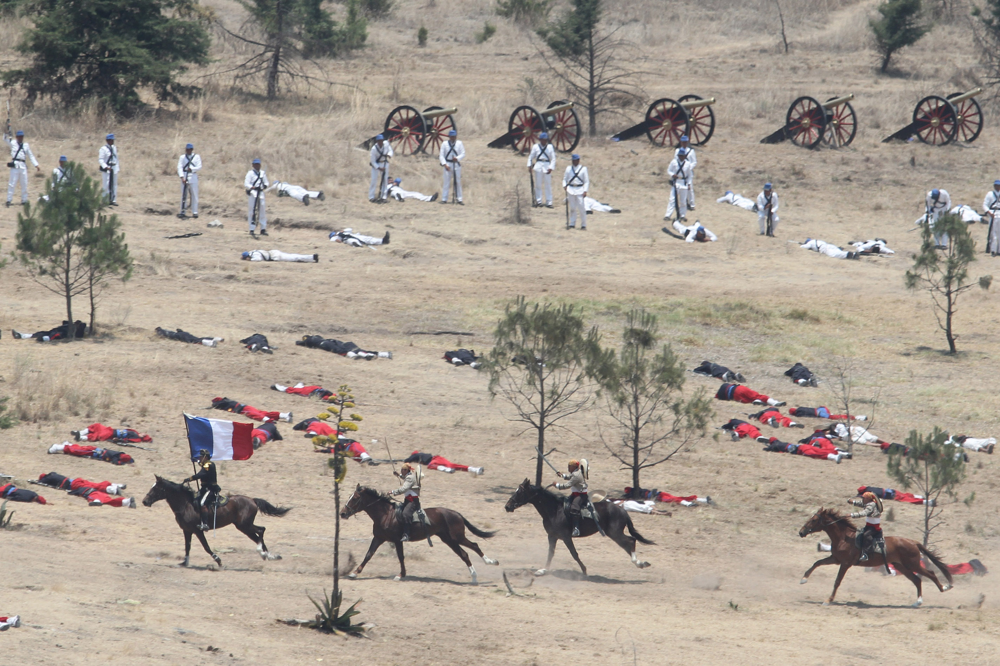

Asegurado el paso de Acultzingo, el 2 de mayo de 1862 la columna principal del ejército expedicionario francés salió de San Agustín del Palmar, en Veracruz, para cruzar la Sierra Madre Oriental y dirigirse hacia Puebla, paso obligado para llegar a la capital del país y que era además uno de los bastiones del Partido Conservador, donde esperaban ser recibidos "con una lluvia de rosas", como le aseguró Saligny a Napoleón III en una carta.4 El 3 de mayo por la noche, el general Zaragoza arribó a Puebla, dejando en su retaguardia una brigada de caballería para hostigar a los invasores. Los efectivos del Ejército de Oriente se organizaron por las calles desiertas de la ciudad, ya que la mayoría de la población era partidaria de la invasión.
Zaragoza estableció su cuartel a unos cuantos metros de la línea de batalla, donde estableció el plan para la defensa de la plaza (ver tabla superior), que consistió en concentrar los pertrechos en el sur y oriente de la ciudad, esperando evitar que los franceses alcanzaran al área urbana de Puebla.
El 4 de mayo, los exploradores mexicanos volvieron con noticias de que una columna de conservadores a caballo, al mando de Leonardo Márquez y José María Cobos, marchaba por la zona de Atlixco para unirse con las fuerzas de Lorencez en el ataque a Puebla. Zaragoza envió una brigada de 2000 hombres bajo el mando de Tomás O'Horán y Antonio Carbajal, con el fin de detenerlo, lo cual lograron. Aunque sus fuerzas habían disminuido, los mexicanos se prepararon para la defensa de Puebla. Contaban con dos baterías de artillería de batalla y dos de montaña, cubriendo los fuertes con 1200 hombres y formando a otros 3500 en cuatro columnas de infantería con una batería de batalla y una brigada de caballería por el lado del camino a Amozoc.
El ala derecha mexicana la cubrían las tropas de Oaxaca dirigidas por Porfirio Díaz. El centro de la línea lo ocuparon Felipe Berriózabal y Francisco Lamadrid con las tropas del Estado de México y San Luis Potosí. La izquierda se apoyó en el cerro de Acueyametepec ubicado en el norte de la ciudad y en cuya cumbre se ubicaban los Fuertes de Loreto y Guadalupe, con el general Miguel Negrete a la cabeza de la Segunda División de Infantería. La artillería sobrante la colocaron en los fortines y reductos dentro de Puebla, quedando al mando del general Santiago Tapia.
La línea de batalla mexicana formó un ángulo que se extendió desde Guadalupe hasta un sitio conocido como Plaza de Román, frente a las posiciones enemigas. Zaragoza dispuso que el general Lamadrid defendiera con las tropas potosinas y dos piezas de artillería el camino que conectaba a la ciudad con la garita de Amozoc. La derecha de la línea de batalla mexicana la cerró Porfirio Díaz con la División de Oaxaca, auxiliado por los escuadrones de Lanceros de Toluca y Oaxaca.
Los franceses continuaron su avance, colocando sus baterías frente a Guadalupe, al tiempo que devolvían el fuego mexicano proveniente de esa posición.
En ese momento los zuavos, el regimiento de élite de la infantería francesa, iniciaron su ascenso por el cerro hacia Guadalupe, perdiéndose de la vista de los fusileros mexicanos. De repente, aparecieron disparando frente a la fortificación. Sin embargo, el fuego lanzado por los mexicanos los detuvo en seco. En ese instante, los soldados de Berriozábal los recibieron con sus bayonetas, por lo que tuvieron que retirarse en buen orden hasta ponerse fuera de tiro. Se repusieron rápidamente y se lanzaron de nuevo intentando tomar el fuerte.
Los franceses, apoyados por el 1.er. y 2o. Regimientos de Infantería de Marina, se abalanzaron sobre el resto de la línea mexicana, siendo recibidos con la bayoneta. La columna francesa fue rechazada en Guadalupe y Loreto, siendo igualmente repelidos los ataques de otras columnas francesas desplegadas. En ese momento, el coronel mexicano José Rojo avisó a Antonio Álvarez que era tiempo de que la caballería mexicana entrara en acción para alcanzar una victoria completa. Ordenó a los Carabineros de Pachuca cargar sobre los restos de la columna, disparando sus carabinas y lanzando mandobles de sable sobre los franceses, siendo totalmente rechazados.
Mientras, cuando la segunda columna llegó al Fuerte de Guadalupe protegida por una línea de tiradores, Porfirio Díaz acudió en auxilio de los Rifleros de San Luis Potosí, que estaban a punto de ser rodeados. Movió en columna al Batallón Guerrero, a las órdenes del coronel Jiménez, y le ganó el terreno a los franceses. Para apoyar envió al resto de las tropas de Oaxaca, con los coroneles Espinoza y Loaeza a la cabeza, con lo que se logró expulsar al enemigo de las cercanías. El éxito alentó a Díaz, que destacó al Batallón Morelos con dos piezas de artillería a la izquierda, mientras por la derecha los Rifleros de San Luis Potosí se reponían de la pelea, antecedidos por una carga de los Lanceros de Oaxaca, trabándose un combate cuerpo a cuerpo que hizo retroceder a los atacantes.
En aquel momento, luego de ser repelidos por última vez, las efectivos franceses empezaron a huir, completamente dispersados. Se replegaron a la hacienda Los Álamos, para finalmente retirarse hacia Amozoc.
